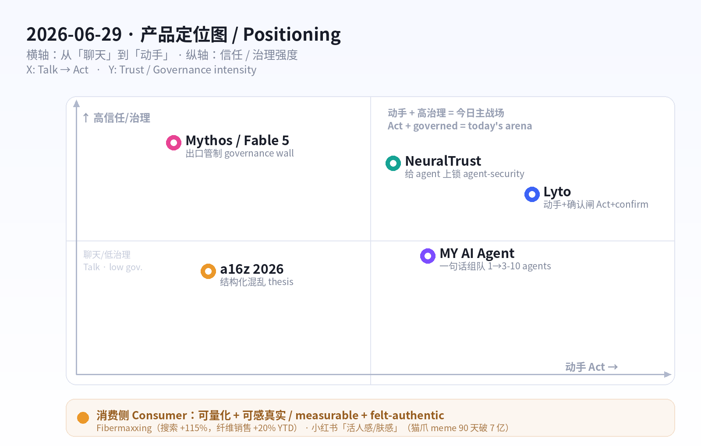
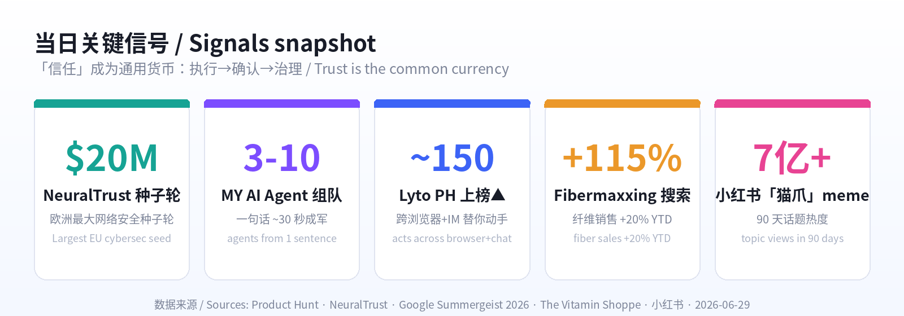

数据来源 / Sources: Product Hunt（Lyto 6/28 日榜、MY AI Agent）、Hacker News（6 月趋势：从「炫技」转向「信任/安全/可控」）、a16z《Big Ideas 2026 / Notes on AI Apps in 2026》、Anthropic Mythos / Fable 5（CNBC 6/9、CNN 6/26）、NeuralTrust $20M 种子轮（PR 6/17）、Google Summergeist 2026 与 The Vitamin Shoppe（fibermaxxing）、小红书 2026 趋势（知乎/TopMarketing/人人都是产品经理）。 方法 / Method: WebSearch + web_fetch 抓取公开数据。X / LinkedIn / 小红书 / Sensor Tower / Product Hunt 需登录或为客户端渲染，采用公开检索摘要替代；HN
/front抓取返回过期缓存日，改用检索摘要。为保证每日新意，已排除 6/12–6/20 已深度分析过的产品（Fundraisly、Slashy、Vokal、Goldfish、Minimi、Framer 3.0、OpenCode、BlitzGraph、Wispr Flow、Ardent 等）。 免责声明 / Disclaimer: 本报告为趋势研究，非投资建议。涉及融资/估值/排名为第三方公开披露，可能随时变化。
一句话 / In one line： 6 月 19 日的主线是「按用量收费的时代到了」；今天的主线是「AI agent 不再只是聊天，它开始替你动手——于是『信任』成了新的产品界面」。 Agent 跨浏览器与即时通讯替你干活、一句话组建 3–10 人的 agent 团队；但价值与风险同时上移到「执行层」，于是出现了「执行前确认」、拿下欧洲最大网络安全种子轮的「agent 安全」、以及连最强模型都要先过出口管制的「治理墙」。
Where June 19 was "the metered-AI era has arrived," today's throughline is "agents stop talking and start doing — so trust becomes the new product surface." Agents now execute across your browser and messaging apps, and you can spin up a 3–10-agent team from one sentence. But value and risk move to the execution layer — hence built-in confirmation steps, a record agent-security seed round, and a governance wall in front of even the most capable models.
三股力量在同一天交汇：
消费侧延续「真实、可感、可量化」逻辑：欧美的 fibermaxxing（纤维最大化） 成为 2026 最大健康运动——可测量的健康优化（The Vitamin Shoppe 纤维品类销售 YTD +20%，连卡乐 SunChips 都要出高纤版）；中国的小红书进入「活人感 + 肤感优先」时代——真实笔记赢过精致摆拍，「上身体验」压过「成分表」。

五条最强信号 / Five strongest signals
Product Hunt 6/28 上榜（约 150 upvotes）。Lyto 的定位一句话戳中痛点：「一个 agent，贯穿你的浏览器、工具和消息」——它不是再给你一个聊天框，而是装进 Chrome 后真的动手：开关标签页、滚动、点击、填表单、操作页面里的每一个 DOM 元素；读你的页面、填你的表单、建表格做报告，并接通 Gmail / Slack / Google Sheets / GitHub。最抓眼球的是「离开电脑也能用」：从 WhatsApp / Telegram 发一句话（如「做一份带图的周报发给老板」），它把成品文件直接发到任意联系人。为了让「会动手的 agent」可被信任，Lyto 做了两道闸：变更类动作（发邮件、改表格）执行前先给预览并要你确认；当数据/流程有矛盾时，它主动标注并发问，而不是猜——口号是「绝不悄悄做错事」。
Lyto (PH June 28, ~150 upvotes) nails it: "one AI agent across your browser, tools, and messages." Instead of another chat box, it installs in Chrome and acts — opens/closes tabs, scrolls, clicks, fills forms, manipulates any DOM element; reads pages, builds spreadsheets/reports, and connects Gmail / Slack / Sheets / GitHub. The standout: no-laptop operation — text it from WhatsApp/Telegram ("build a report with graphs and send it to my boss") and it delivers the finished file to any contact. To make a doing agent trustworthy, Lyto adds two gates: mutative actions (send email, edit a sheet) get a preview + confirmation before commit, and when data/workflow is messy it flags the inconsistency and asks rather than guessing — "never silently do the wrong thing."
| 维度 Dimension | 分析 Analysis |
|---|---|
| 商业模式 Business model | 预计 freemium 订阅 + 用量（agent 执行/连接器）。浏览器扩展低摩擦获客。Likely freemium subscription + usage; low-friction via Chrome extension. |
| 核心功能 Core value | 浏览器内执行（点/填/抓 DOM）+ 跨工具连接 + IM 远程下单 + 执行前确认。In-browser execution + cross-tool connectors + chat-app remote control + confirm-before-commit. |
| 成功因素 Success factors | 把 agent 嵌进既有界面（浏览器/IM），「交付成品」而非聊天；信任设计降低代价。Embedded in existing surfaces; ships outcomes; trust-by-design. |
| 细分市场 Niche | 知识工作者的「网页操作自动化」（研究、填报、出报告）。Web-task automation for knowledge workers. |
| 目标受众 Audience | 重度用浏览器+SaaS、想「动嘴不动手」的运营/销售/创始人。Ops/sales/founders living in browser + SaaS. |
| 品牌设计 Brand | 名字短促好记；定位「会动手的 agent」对冲「只会聊天」的同类。Short name; "agent that acts" vs chat-only rivals. |
| 产品数据 Data | PH 6/28，约 150 upvotes；连接 Gmail/Slack/Sheets/GitHub；支持 WhatsApp/Telegram。~150 upvotes; 4+ integrations; WhatsApp/Telegram. |
| 链接 Link | producthunt.com/products/lyto · trylyto.com |
| 评论摘要 Reviews | 被赞「真的会干活、能从手机远程下单」；隐忧在浏览器级权限与可靠性——「执行前确认」正是回应。Praised for actually doing tasks & phone control; concern = browser-level permissions/reliability — the confirm step answers it. |
如果说 Lyto 是「一个会动手的 agent」，MY AI Agent 押注的是「一支会分工的 agent 团队」。你给一个目标（一句话），它在约 30 秒内要么给你雇一个 AI 队友、要么组建一支 3–10 人的专家 agent 团队，各司其职协作完成。它把「多 agent 编排」这件原本需要写框架/连工具的事，压缩成「说一句目标」的消费级体验——这正是 2026 年「编排 > 单模型」的缩影：用户买的不是某个大模型，而是「一组分好工、能交付的角色」。
If Lyto is one agent that acts, MY AI Agent bets on a team that divides labor. Give it one goal in a sentence and in ~30 seconds it either hires you a single AI teammate or assembles a 3–10-agent specialist team that collaborates to finish the job. It compresses multi-agent orchestration — normally a framework-and-glue project — into a consumer-grade "just say the goal." It's the epitome of 2026's "orchestration beats single model": users buy a cast of roles that ships, not a model.
| 维度 Dimension | 分析 Analysis |
|---|---|
| 商业模式 Business model | 预计订阅 + 用量（按 agent 数/任务量）。Likely subscription + usage (per agent/task). |
| 核心功能 Core value | 自然语言一句话 → 自动组队（角色/分工）+ 协作执行。One sentence → auto-assembled role team + collaborative execution. |
| 成功因素 Success factors | 把「多 agent 编排」降到消费级门槛；30 秒见效的即时满足。Consumer-grade orchestration; 30-second time-to-value. |
| 细分市场 Niche | 个人/小团队的「即开即用 agent 工作组」。Instant agent workgroups for solos/small teams. |
| 目标受众 Audience | 想要「一队人帮我干」但不懂搭框架的创业者/自由职业者。Founders/freelancers who want a team, not a framework. |
| 品牌设计 Brand | 「MY AI Agent」直白；卖点是「团队感」而非「模型感」。Plain name; sells team, not model. |
| 产品数据 Data | PH 上榜；核心指标「3–10 个 agent / ~30 秒组队」。On PH; key spec: 3–10 agents in ~30s. |
| 链接 Link | producthunt.com/products/my-ai-agent |
| 评论摘要 Reviews | 同赛道竞品众多（AgentX、AgentCrew、Kodey.ai）；差异化看「组队质量+协作可靠性」。Crowded space; differentiation = team quality + collaboration reliability. |
当 agent 真的开始在企业里动手，「谁来管住它们」就成了刚需。西班牙的 NeuralTrust 在 6/17 宣布完成 $20M 种子轮——欧洲史上最大的网络安全种子轮，由 Alstin Capital 领投（VentureFriends、Seaya、Kibo、Banc Sabadell 等跟投）。它做的是一个识别、保护并扩展企业内运行的 AI agent 的平台：在 agent 进入生产环境时做发现、防护与治理。客户已包括 Air Europa、Abanca、Iberia、Banc Sabadell 等银行/航空/能源/政府机构，并被 Gartner（代表厂商）、KuppingerCole（GenAI 防御领导者）、MarketsandMarkets（2026 Agentic AI 安全象限领导者）点名。Lyto 的「执行前确认」是产品级的信任，NeuralTrust 则是企业级的信任基础设施——同一枚硬币的两面。
When agents start acting inside the enterprise, "who keeps them in line?" becomes a must-have. Spain's NeuralTrust closed a $20M seed on June 17 — the largest cybersecurity seed by an EU company to date — led by Alstin Capital (with VentureFriends, Seaya, Kibo, Banc Sabadell). Its platform identifies, secures, and scales the AI agents running across an enterprise as they move into production. Customers already include Air Europa, Abanca, Iberia, Banc Sabadell plus global banks/airlines/energy/government, with analyst nods from Gartner, KuppingerCole, and MarketsandMarkets. Lyto's confirm-step is product-level trust; NeuralTrust is enterprise-level trust infrastructure — two sides of one coin.
| 维度 Dimension | 分析 Analysis |
|---|---|
| 商业模式 Business model | 企业 SaaS（平台/席位+用量），主打受监管行业。Enterprise SaaS (platform/seat + usage), regulated industries. |
| 核心功能 Core value | AI agent 的发现、运行时防护、合规治理与扩展。Discovery, runtime protection, governance & scaling of AI agents. |
| 成功因素 Success factors | 站在「agent 进生产」的刚需口；先拿下银行/航空标杆客户与分析师背书。Rides "agents in production"; flagship logos + analyst recognition. |
| 细分市场 Niche | 企业 Agentic-AI 安全（agent 版的「身份+护栏」）。Enterprise agentic-AI security. |
| 目标受众 Audience | 把自治 agent 推进生产的银行/航空/能源/政府 CISO。CISOs in banks/airlines/energy/gov deploying autonomous agents. |
| 品牌设计 Brand | 「NeuralTrust」=神经网络 + 信任，命名即定位。Name = neural + trust; positioning baked in. |
| 产品数据 Data | $20M 种子轮（6/17，欧洲最大）；客户含 Iberia/Abanca 等；多份分析师领导者认定。$20M seed; marquee logos; multiple analyst "Leader" placements. |
| 链接 Link | neuraltrust.ai/news/neuraltrust-raises-20m |
| 评论摘要 Reviews | 行业视角：agent 安全是 2026 最被看好的「卖铲子」赛道之一（融资与分析师热度印证）。Industry view: agent security is a top 2026 "picks-and-shovels" bet. |
如果说前三个产品讲「agent 动手 + 信任」，那么模型层正在发生同构的事：能力越强，越先被治理「限速」。 Anthropic 6 月推出更强一档的 Mythos 级模型——其中 Fable 5 面向企业客户与付费用户普发，而真正的 Mythos 5 只对已有 Preview 权限的受信任合作方开放，并已扩展到 15+ 国、150+ 机构（6/2）。更关键的是政府层面的治理：因对其网络安全能力的国家安全顾虑，美国一度下达出口禁令，直到 6/26 才修订许可、放行给「部分受信任的公司与政府机构」。这意味着 2026 的一条新规则：前沿模型的「可得性」不再只由价格/算力决定，而是由「治理与信任」决定——和 Lyto 的「确认闸」、NeuralTrust 的「agent 上锁」是同一种逻辑在不同层级的展开。
While the products above are about agents acting + trust, the model layer shows the same shape: the more capable the model, the sooner governance throttles it. Anthropic's June Mythos-class models split: Fable 5 ships broadly to enterprise + paid users, while Mythos 5 stays gated to vetted partners with existing Preview access (expanded to 150+ orgs in 15+ countries on June 2). The bigger story is government governance: over national-security concerns about its cyber capabilities, the US first imposed an export block, then on June 26 revised licensing to allow release to select trusted companies and government agencies. The new 2026 rule: a frontier model's availability is set by governance & trust, not just price/compute — the same logic as Lyto's confirm-gate and NeuralTrust's agent lock, one level up.
| 维度 Dimension | 分析 Analysis |
|---|---|
| 商业模式 Business model | 分层可得性：Fable 5 普发变现，Mythos 5 受信任方限定。Tiered access: Fable 5 broad; Mythos 5 gated. |
| 核心要点 Core point | 能力跃迁 + 主动治理（出口管制/受信任名单）。Capability leap + active governance (export controls / trusted list). |
| 为何重要 Why it matters | 「谁能用最强模型」开始由治理而非算力决定。Access to frontier capability now set by governance. |
| 受影响方 Who's affected | 前沿模型用户、监管者、做安全/合规的创业者。Frontier users, regulators, safety/compliance startups. |
| 链接 Link | cnbc.com/2026/06/09 (Fable 5) · cnn.com/2026/06/26 (export) |
| 数据 Data | Mythos 扩展至 15+ 国 150+ 机构（6/2）；6/26 政府放行受信任方。150+ orgs / 15+ countries; June 26 limited release. |
a16z 的 2026 主张为上面的产品热潮提供了「投资人视角」的解释：2026 由agentic 系统、从混乱中提炼结构化智能、深度个性化定义。三条对创业者最实用的判断：①结构化混乱——企业里非结构化、多模态数据（PDF、视频、日志）正是 RAG/agent 失效的根因，谁能结构化并治理它，谁就解锁企业价值（这与「信任/安全」赛道同源）；②前沿在硅谷之外——大量 AI 机会藏在传统垂直行业，靠「前沿部署（forward-deployed）」去发掘；③在公司诞生时抢分发——服务「绿地（greenfield）新公司」，随客户一起长大。a16z 还指出：即便在被大厂主导的编码领域，创业生态仅 2025 一年就创造了 >$10 亿新收入。
a16z's 2026 thesis is the investor-side read on today's product wave: 2026 is defined by agentic systems, structured intelligence from chaos, and deep personalization. Three founder-useful calls: (1) Structure the chaos — unstructured, multimodal enterprise data (PDFs, video, logs) is exactly what breaks RAG/agents; structuring + governing it unlocks value (same root as the trust/security lane); (2) the frontier is outside Silicon Valley — opportunity hides in legacy verticals, reachable via forward-deployed motions; (3) win distribution at formation — serve greenfield companies and grow with them. a16z also notes that even in lab-dominated coding, startups generated >$1B of new revenue in 2025 alone.
| 维度 Dimension | 分析 Analysis |
|---|---|
| 核心论点 Core thesis | Agentic + 结构化混乱 + 深度个性化；结构化/治理数据=价值。Agentic + structure-the-chaos + personalization. |
| 分发打法 Distribution | 前沿部署进垂直行业；在公司「诞生时」抢占。Forward-deployed into verticals; win at formation. |
| 为何重要 Why it matters | 给「信任/数据治理/agent 工具」赛道提供资本叙事。Capital narrative for the trust/data/agent lanes. |
| 受影响方 Who's affected | AI 应用层创业者、企业数据/平台团队。AI app founders; enterprise data/platform teams. |
| 链接 Link | a16z.com/notes-on-ai-apps-in-2026 · Big Ideas 2026 |
| 数据 Data | 编码创业生态 2025 年 >$10 亿新收入；AI 占 2026 VC ~33%。Coding startups >$1B new rev (2025); AI ≈33% of 2026 VC. |
消费侧今天最强的信号是「可量化的健康优化」。Google《Summergeist 2026》显示「fibermaxxing（纤维最大化）」90 天内搜索 +115%；它被多家媒体称为2026 最大健康运动——由 Gen Z 在 TikTok 带起，核心是「主动把膳食纤维拉满」以改善肠道/代谢健康，并与 GLP-1（减重药）营养强绑定。落到生意上：The Vitamin Shoppe 纤维品类销售 YTD +20%，站内「fiber」搜索 +59%、「psyllium husk（洋车前子壳）」+150%；约 95% 美国人纤维摄入不足、70% 正主动补纤维。大厂跟进——PepsiCo 要出 SunChips Fiber 与 Smartfood Fiber Pop；Momentous 推「三重作用」可发酵纤维（洋车前子+米糠+土豆淀粉+肉桂，6g/份）。这是「looksmaxxing → healthmaxxing」优化文化的延伸：把健康做成可打卡、可量化、可晒的数字目标。
Today's strongest consumer signal is measurable health optimization. Google's Summergeist 2026 shows "fibermaxxing" search +115% in 90 days; outlets call it the biggest health movement of 2026 — a Gen-Z TikTok trend of maxxing dietary fiber for gut/metabolic health, tightly tied to GLP-1 nutrition. The business proof: The Vitamin Shoppe's fiber category sales are +20% YTD, with on-site "fiber" searches +59% and "psyllium husk" +150%; ~95% of Americans under-consume fiber and 70% are actively adding it. Incumbents are piling in — PepsiCo is launching SunChips Fiber and Smartfood Fiber Pop; Momentous shipped a triple-action fermentable fiber (psyllium + rice bran + potato starch + cinnamon, 6g/serving). It extends the looksmaxxing → healthmaxxing culture: turn health into a trackable, measurable, postable number.
| 维度 Dimension | 分析 Analysis |
|---|---|
| 商业机会 Opportunity | 高纤食品/零食、纤维补剂、GLP-1 配套营养、肠道健康检测。High-fiber snacks, fiber supplements, GLP-1 companion nutrition, gut tests. |
| 增长信号 Growth signal | 搜索 +115%；Vitamin Shoppe 纤维销售 +20% YTD；psyllium +150%。Search +115%; fiber sales +20% YTD; psyllium +150%. |
| 成功因素 Success factors | 可量化（克数/打卡）+ GLP-1 顺风 + 大厂背书放大。Measurable + GLP-1 tailwind + incumbent amplification. |
| 目标受众 Audience | Gen Z/健康优化者、GLP-1 用户、肠道健康人群。Gen Z optimizers, GLP-1 users, gut-health seekers. |
| 链接 Link | Google Summergeist 2026 · Vitamin Shoppe (fiber) |
| 风险 Risk | 健康趋势波动；过量纤维有不适风险，需「循序渐进」沟通。Trend volatility; over-fiber discomfort — "ramp up slowly" messaging. |
中国消费侧的主线与欧美互为镜像——欧美讲「可量化」，小红书讲「可感知 + 真实」。2026 的几条趋势：① 「活人感 / 活人笔记」——自带生活烟火气的真实分享，比标准话术更能赢得信任、实现转化；② 肤感 / 质地 > 成分——用户对「上身体验」的讨论度压过「成分表」，说明决策第一关是真实体验、成分只是信任背书；③ 精细化 + 小众圈层——品牌不再追「爆款破圈」，而是用足够多、足够细的内容打透微观场景与精准人群（与 a16z「在公司诞生时抢分发」异曲同工：赢在窄而准）；④ 社交 meme 仍是流量发动机：黄色「猫爪打招呼」贴纸魔性出圈，90 天相关话题热度破 7 亿；平台同时用 AI 识别虚假/抄袭账号，为「真实」兜底。
China's consumer throughline mirrors the West — where the US says measurable, Xiaohongshu (RED) says felt + authentic. 2026 trends: (1) "living-person notes" — real, slice-of-life posts beat scripted copy on trust and conversion; (2) texture/feel > ingredients — chatter about how it feels on you now outweighs ingredient lists, so the first gate is real experience, with ingredients as a trust backstop; (3) precision over going viral — brands win by saturating micro-scenarios and precise audiences with many fine-grained posts (echoing a16z's "win at formation": win narrow and specific); (4) memes still drive reach — a yellow "cat-paw greeting" sticker hit 700M+ topic views in 90 days, while the platform uses AI to detect fake/plagiarized accounts to backstop authenticity.
| 维度 Dimension | 分析 Analysis |
|---|---|
| 商业机会 Opportunity | 「活人感」KOC 内容、肤感/质地展示、微观场景精准种草、闭环电商。KOC authenticity, texture demos, micro-scenario seeding, closed-loop commerce. |
| 增长信号 Growth signal | 「猫爪打招呼」meme 90 天破 7 亿；闭环电商持续加码。Cat-paw meme 700M+ in 90d; closed-loop commerce momentum. |
| 成功因素 Success factors | 真实>精致；体验>成分；窄而准>泛而爆。Authentic>polished; feel>ingredients; narrow>broad. |
| 目标受众 Audience | Z 世代/品质生活人群；细分兴趣圈层。Gen Z lifestyle buyers; niche interest circles. |
| 链接 Link | 小红书 2026 八大趋势(知乎) · 小红书热点解读(TopMarketing) |
| 风险 Risk | 「活人感」难规模化、易被模板化反噬；需持续真实。"Authenticity" hard to scale; templated fakes backfire. |
| 产品/趋势 Item | 类型 Type | 商业模式 Model | 细分市场 Niche | 目标受众 Audience | 关键数据 Key data | 链接 Link |
|---|---|---|---|---|---|---|
| Lyto | 产品 Product | Freemium + 用量 | 浏览器任务自动化 | 运营/销售/创始人 | PH 6/28 ~150▲；接 Gmail/Slack/Sheets/GitHub | ↗ |
| MY AI Agent | 产品 Product | 订阅 + 用量 | 即开即用 agent 工作组 | 个人/小团队 | 一句话→3–10 agent / ~30s | ↗ |
| NeuralTrust | 产品/融资 | 企业 SaaS | 企业 Agentic-AI 安全 | 受监管行业 CISO | $20M 种子（欧洲最大）；客户 Iberia/Abanca | ↗ |
| Anthropic Mythos/Fable 5 | 趋势 Trend | 分层可得性 | 前沿模型 | 前沿用户/监管 | 150+ 机构/15+ 国；6/26 政府放行受信任方 | ↗ |
| a16z Big Ideas 2026 | 趋势 Trend | — (论点) | AI 应用/数据治理 | 创业者/投资人 | 编码创业 2025 >$10 亿新收入 | ↗ |
| Fibermaxxing | 消费 Consumer | 食品/补剂/检测 | 肠道+代谢健康 | Gen Z/GLP-1 人群 | 搜索 +115%；纤维销售 +20% YTD | ↗ |
| 小红书 活人感/肤感 | 消费 Consumer | 内容→闭环电商 | 精细化种草 | Z 世代品质人群 | 猫爪 meme 90 天破 7 亿 | ↗ |

1. AI 的价值从「答得好」移到「干得成」——「信任」成了新的产品界面。 Lyto 跨界面替你交付成品、MY AI Agent 一句话组队，agent 正式从「聊天」走向「执行」。但能动手 = 能闯祸，于是信任被显式产品化：Lyto 把「变更前确认」做进交互、NeuralTrust 拿欧洲最大网络安全种子轮「给 agent 上锁」、连最强的 Mythos 都要先过出口管制。结论：2026 下半年，能跑通「执行 + 可控」闭环的，才是真 agent；只会 demo 的会被 HN 那股「要信任、要安全」的情绪淘汰。
AI's value shifts from answering well to getting it done — and trust becomes the product surface. Agents now execute (Lyto, MY AI Agent), but doing means risking, so trust gets productized: Lyto's confirm-step, NeuralTrust's record agent-security seed, and export controls on Mythos. Takeaway: in H2 2026, the real agents are the ones that close the "execute + control" loop; demo-only tools lose to HN's "trust & security" mood.
2. 编排 > 单模型；分层可得性 > 一刀切开放。 用户买的不再是「某个大模型」，而是「会分工、能交付的一组角色」（MY AI Agent）或「跨界面动手的一个 agent」（Lyto）。模型侧则用「Fable 5 普发 / Mythos 5 限定」的分层可得性取代「一把全开」。两件事指向同一原则：价值与风险都在『编排与可得性』层重新分配。
Orchestration beats single model; tiered access beats blanket release. Buyers want a cast of roles that ships or one agent that acts across surfaces, while models move to tiered availability (Fable 5 broad / Mythos 5 gated). Same principle: value and risk are re-allocated at the orchestration & access layer.
3. 消费回到「真实 / 可感 / 可量化」——欧美量化、中国可感，殊途同归。 Fibermaxxing 把健康做成可量化的数字目标（克数、打卡、品类 +20%），小红书把种草押在可感知的真实（活人感、肤感>成分）。两边都在抛弃「浮夸的承诺」，奖励「能被验证的体验」——这与 AI 侧「要可控、要可信」的情绪同频。
Consumer returns to authentic / felt / measurable — the US quantifies, China makes it felt. Fibermaxxing turns health into a measurable number; Xiaohongshu bets on felt authenticity. Both ditch hype for verifiable experience — the consumer echo of AI's "controllable & trustworthy" mood.
4. 赢的姿势是「窄而准」——在『诞生时/微观场景』抢占。 a16z 主张「在公司诞生时（greenfield）抢分发」「前沿部署进垂直行业」；小红书强调「微观场景 + 精准人群」的极致精细化。无论 to B 还是 to C，2026 的分发红利属于『先把一个窄场景打透、再随它长大』的人。
The winning posture is narrow and specific — capture at formation / in the micro-scenario. a16z: win greenfield, go forward-deployed into verticals. Xiaohongshu: saturate micro-scenarios and precise audiences. B2B or B2C, 2026's distribution edge belongs to those who win one narrow scene first, then grow with it.
一句话收尾 / Bottom line: 昨天比的是「谁更聪明、谁更便宜」；今天比的是「谁能动手、又让人放心」——产品端的「确认闸」、企业端的「agent 安全」、模型端的「治理墙」，是同一道命题的三个答案。消费端则用「可量化」与「活人感」给出了它的版本：信任，正在成为所有赛道的通用货币。
Yesterday's contest was "smarter & cheaper." Today's is "can it act — and can I trust it." The product-level confirm-gate, the enterprise-level agent-security, and the model-level governance wall are three answers to one question — and consumers give their version via measurable and authentic. Trust is becoming the common currency across every lane.**
报告生成 / Generated: 2026-06-29 · 自动化趋势挖掘任务 / Automated trend-mining task. 本报告仅供研究参考，非投资建议 / Research only, not investment advice.